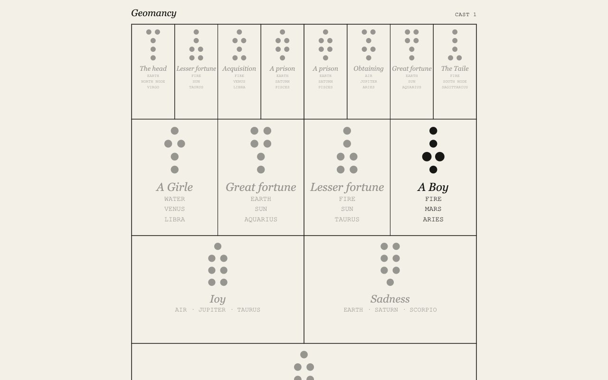
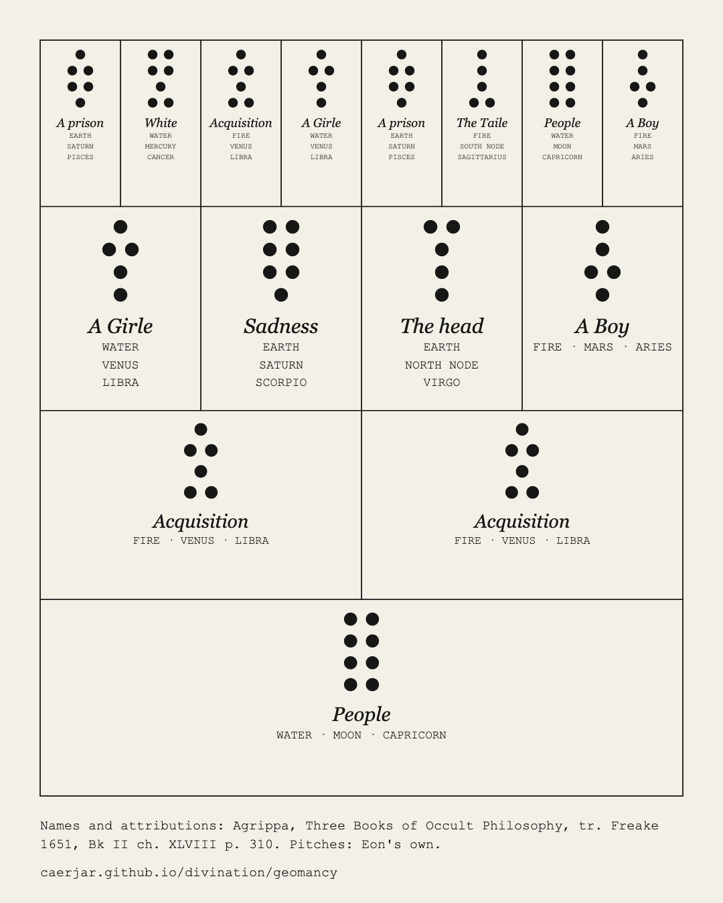

Geomancy
You ask a question and make sixteen lines of marks without counting. Each line is odd or even, four lines make a figure, and the first four figures, the Mothers, decide the rest: the Daughters, the Nieces, the two Witnesses and the Judge follow by rule. Here you can hear that happen. It is the first app in a suite of divination tools that share one core.


Sound
A single point is one stroke and a double point is two, so every figure is a rhythm, and adding two figures sounds like their difference. Each cast becomes fifteen bars that belong to it. On a keyboard, Space is a mark and Enter ends the line; by touch, a tap marks and a drag across ends the line. The sound is made only from oscillators and noise.
Sources
The figure names, and each figure's element, planet and sign, come from one source: Agrippa's Three Books of Occult Philosophy, in the English of 1651, Book II, chapter 48, page 310. Where Agrippa prints nothing, as with the sign of Rubeus, the tool keeps that silence. Every attribution on screen carries an edition and a locus, or it is not shown; there are no generated meanings. A shield shows what the sources say. It does not predict anything.
The ledger
The cast is written to an append-only ledger before any figure name is shown. The shield is derived in one place, so the same sixteen counts always give the same shield, the same score, the same audio and the same plate. The question never enters a link, and nothing leaves the device without consent.
The plate
The finished shield is kept as a flat chart in the manner of Skinner's fig. 16 and Fludd's plates. It saves as a plate image, a 30 second vertical story video and a WAV of the fifteen bars.
Where it comes from
Geomancy was practised in Arabic as ʿilm al-raml, the science of sand, and reached Latin in the twelfth century.
Agrippa, Three Books of Occult Philosophy, tr. Freake 1651, Bk II ch. XLVIII p. 310
plate PNG, story MP4, WAV